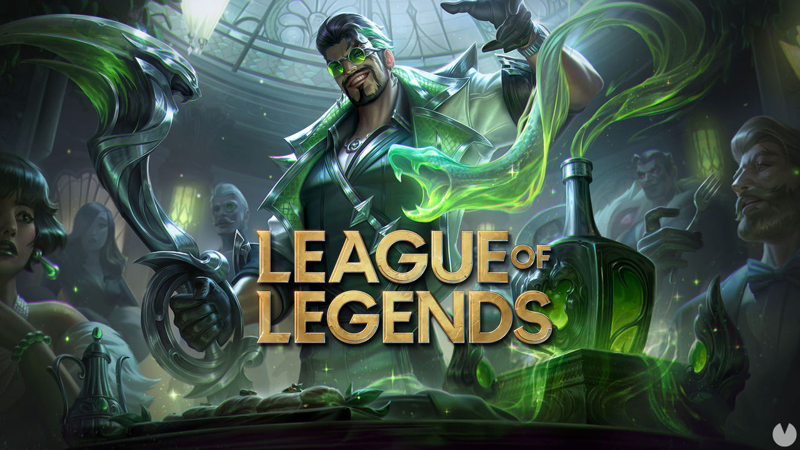

Muhammad Yusuf Sabır
Merhaba, ben Muhammad Yusuf Sabır. Göçmen bir ailenin çocuğu olarak Zeytinburnu/İstanbul'da dünyaya geldim. İlk ve orta okulu Nuripaşa İlköğretim Okulu'nda okuduktan sonra liseyi Kırımlı İsmail Rüştü Olcay Anadolu Lisesi'nde okudum. Şimdi Sakarya Üniversitesi Bilgisayar Mühendisliği bölümünde 2.sınıf öğrencisi olarak öğrenim görmekteyim.
Boş vakitlerimde genellikle futbol oynar veya bilgisayar oyunları oynarım. Genellikle oynadığım bilgisayar oyunun adı ise League of Legends.

League Of Legends
League of Legends bir strateji oyunu, oyunda 150 üzerinde karakter var ve bu karakterleri oynayarak oyunda ilerleyebilir, ligler atlayabilir ve hatta e-sporcu bile olabilirsiniz. Oyun hakkında detaylı bilgi için
burayı inceleyebilirsiniz.